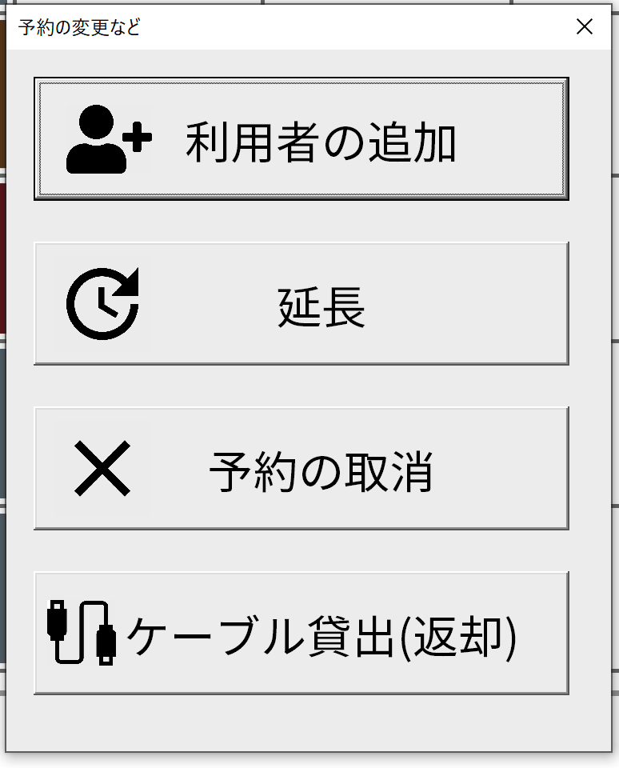
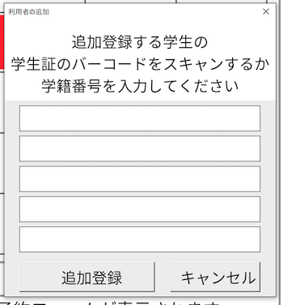
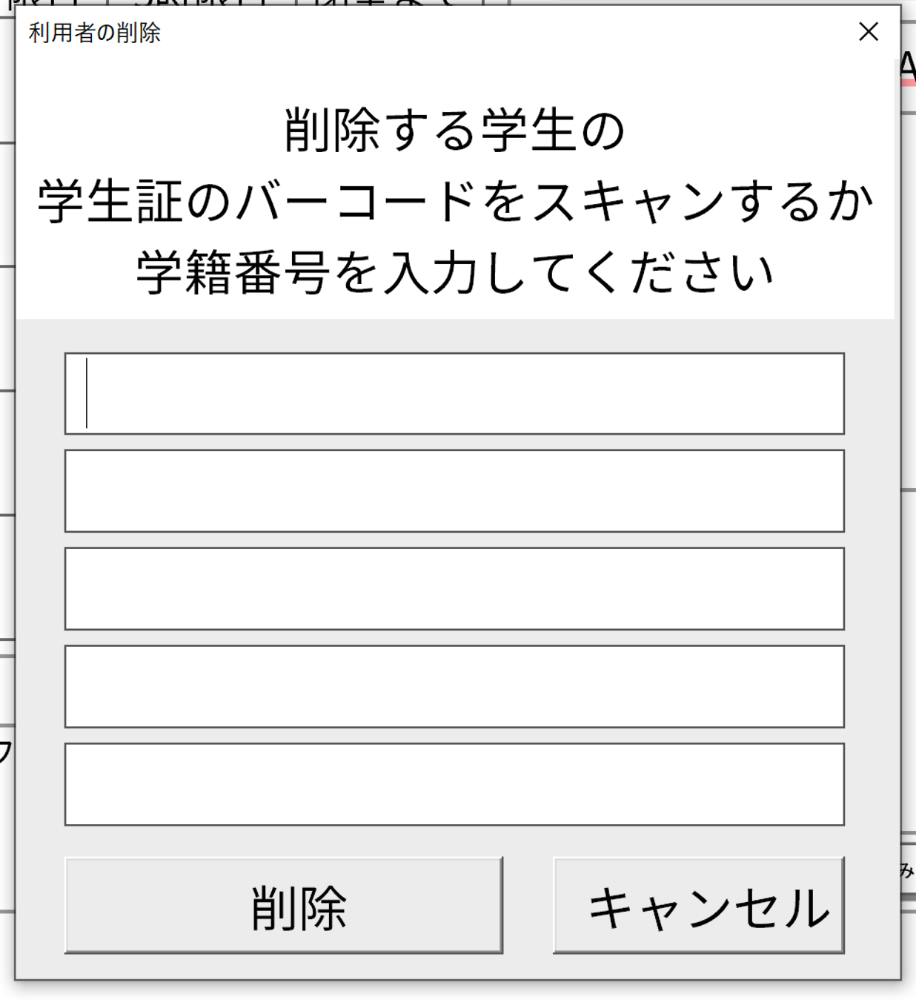

既存予約の変更
予約済か、使用中と表示されているセルをクリックすると予約の変更などフォームが表示されます。マスターモードの場合は使用済のセルをクリックしても表示されます。（マスターモードについて参照する

-
利用者の追加をクリックすると利用者の追加フォームが表示され、新規予約同様に番号を入力することで、予約者の追加を行うことが出来ます。

-
利用者の削除をクリックすると利用者の削除フォームが表示され、すでに予約している番号を入力すると、予約者の削除を行うことができます。

登録されていない番号を入力すると、処理は何もされません。また、削除した結果、利用者がいなくなった場合は予約そのものを削除します。
-
延長をクリックすると、1コマ分延長することが出来ます。
-
予約の取り消しを押すと取り消しフォームが出ます。

LAのパスコードを入力するか、取り消したい予約を行なった人、誰か一人の学籍番号か台帳番号を入力することで予約を取り消すことが出来ます。（LAコントロールパネル―パスコードの設定、システムのカスタマイズ、パスコードの設定参照）
この時、正しく入力していても取り消せない場合があります。これは学籍番号を台帳番号に変換する際に不具合があるからです。具体的には下の画像の黄色の学科の台帳番号は実際にそうであるか不明で仮での変換です。そのため、変換がうまくいかず、取り消しの認証がされません。もしそのような人がいた場合はパスコードを入力して対処してください。
また、できれば正確な台帳番号が手に入れば更新してください。（更新の仕方→GitHubで報告していただければ対応します）

- ケーブル貸し出しボタンをクリックすると、貸し出しのステータスが変化します。